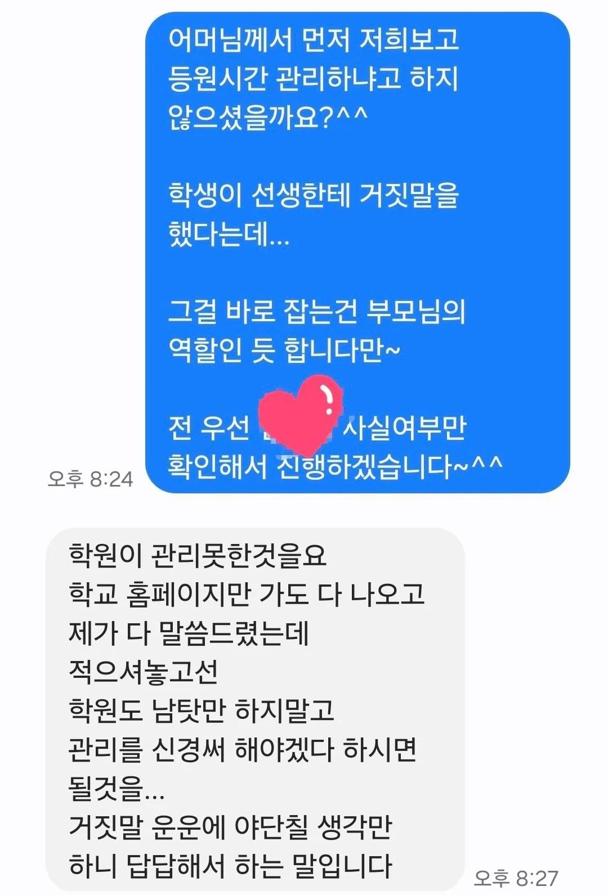

1. 학생이 본인은 학교가 늦게 끝난다며 거짓말하고
학원 수업에 늦게 다님
2. 학부모가 우리 아이는 왜 수업시간이 짧냐고 따짐
3. 아이가 거짓말 한 정황을 알게 됐지만
학부모는 되려 학원이 학교홈페이지 확인도 안해보고
거짓말 운운, 야단칠 생각만 한다고 따짐

1. 학생이 본인은 학교가 늦게 끝난다며 거짓말하고
학원 수업에 늦게 다님
2. 학부모가 우리 아이는 왜 수업시간이 짧냐고 따짐
3. 아이가 거짓말 한 정황을 알게 됐지만
학부모는 되려 학원이 학교홈페이지 확인도 안해보고
거짓말 운운, 야단칠 생각만 한다고 따짐
지 애새낄 안 족치고 남의 귀한 자식 족치기ㅋㅋㅋㅋㅋㅋㅋㅋㅋㅋㅋㅋ
멀리안가고 그냥 여기 댓글에도 본문이랑 똑같은 짓 하는 2놈 있음 ㅇㅇ
근데 여기 댓글 다는 애들만봐도
딱 사회에서의 진상 대 정상인 비율이랑 비슷함
저 학원도 저딴 말투로 문자보내는 것 부터 정상적인 영업마인드가 아님
뭐래 병신이
진상에게 저정도면 양반이지
너같은 놈들이 진상임
학생보다 학원이 갑이야 ㅋㅋ 면접 보는 학원도 많은데 ㅋㅋㅋ
병신애미들한테 병신 애새끼들 나오고 걔네가 학원 물흐리는거 순식간이지
저게 원장이 보낸 문자인지 일개 강사가 보낸 문자인지도 봐야함.강사는 존나 힘없음.
네. 알겠습니다.
오늘부터 학원비는 더 이상 받지 않을 예정이니, 내일부터 자녀 분에게 등원을 하지 않도록 안내하여 주시기 바랍니다.
관련 내용은 작성, 서명, 계약하셨던 계약서 내용의 조항을 확인하여 주시길 바라며, 내일도 학원에 보내실 경우 추가금은 계약 조항에 따른 가산금을 참고하시길 바랍니다. 끝.
라는 내용을 안내할 수 있도록 학원 기관에서는 계약서를 작성하여 주시기 바랍니다. 끝.
제00조(계약의 해지)
1. 본 계약은 아래와 같은 사유로 갑이 을에게 일방 계약 해지를 요구할 수 있다.
- (후략)
점점 이렇게되갈듯... 진상 언제고 받아줄수도없는노릇이니
이렇게 구구절절할 필요가 없다
인기 학원은 학원을 가기위한 학원도 있고
갑이라 걍 꺼지셈 하면 됨
도서관/학원은 학원법을 적용하기 때문에 그런 가산금은 받을 수 없단다.
그런거 시도하면 학원 폐업 할 수 있어
요즘 본인 자식 인성 교육은 지들이 해야된다는걸 모르는 부모가 너무 많은거 같다 지 자식이 구라 친걸 학원보고 뭐 어쩌라는거냐
댓글만 봐도 숨막히네
부모가 ㅂㅅ이니까
애새끼거 벌써부터 입벌구지
싹수가 노랗다 노래